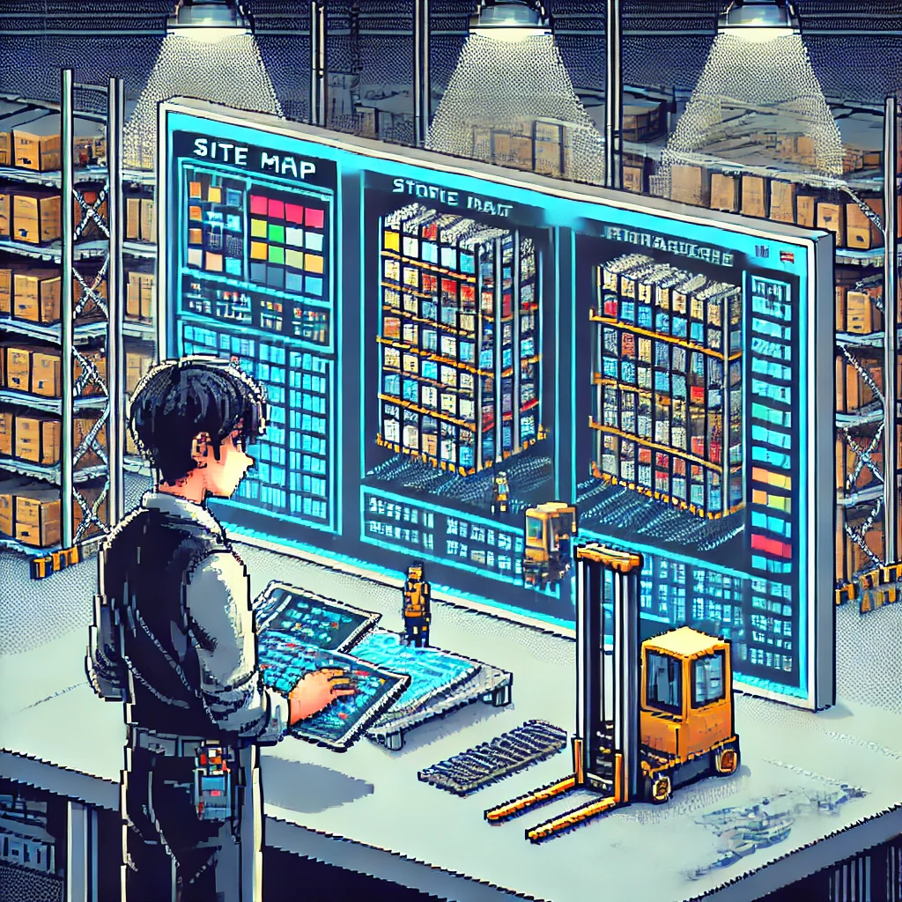

Modélisation Entrepôt - Projet PicOptim
Contexte
Conception et structuration des données relatives aux alvéoles du magasin afin d'assurer une modélisation précise pour le projet LocOptim. Cette initiative a permis de fournir à l'IA des données propres et cohérentes pour un meilleur Script de sortie.
Documents
Technologies
Excel VBA
IMS
WMS
Compétences acquises
- Gérer le patrimoine informatique
- Répondre aux incidents et aux demandes d'assistance
- Travailler en mode projet
- Organiser son développement professionnel